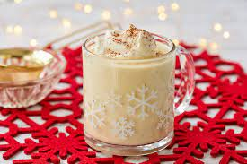

Eggnog
Description
TThis eggnog recipe for thick, creamy, and sweet eggnog with just the right amount of spice took me several years
to perfect. Now everyone asks, "When are you making your eggnog?" In this homemade eggnog recipe, the egg yolks
are tempered for safety, and you can adjust the amount of rum to taste, or leave it out entirely so the whole
family can enjoy this rich holiday treat. It's a bit of work to make, but well worth it, especially when your
holiday guests are so impressed. Learn how to make eggnog at home and you'll never serve store-bought eggnog
again!

Ingredients
- Milk and light cream: This traditional eggnog recipe contains milk and
light cream
- Spices and seasonings: You'll need cinnamon, cloves, vanilla extract, and nutmeg.
- Egg yolks: Egg yolks thicken the mixture, creating a decadent texture.
- Sugar: Of course, you'll need white sugar for this dessert-like beverage.
- Rum: Spike your eggnog with light rum or leave it as-is for a non-alcoholic treat.
Directions
- Combine milk, cinnamon, 1/2 teaspoon vanilla, and cloves in a saucepan over the lowest heat setting; stir
and heat for 5 minutes. Increase heat to medium-low and slowly bring to a boil. Remove from the heat.
- Whisk egg yolks in a large bowl until light yellow in color. Add sugar and whisk until light and fluffy.
- Pour some of the hot milk mixture into the egg yolk mixture, whisking quickly to avoid scrambling the eggs.
Continue adding hot milk and whisking to combine until all milk is incorporated.
- Pour the mixture back into the saucepan. Cook over medium heat, stirring constantly, until thick, about 3
minutes; do not allow the mixture to boil. Strain to remove cloves and let cool for about 1 hour.
- Stir in cream, rum, remaining 2 teaspoons vanilla, and nutmeg. Refrigerate before serving, 8 hours to
overnight.